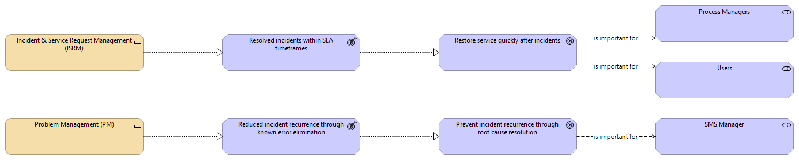

Service Operations - Motivation
(
)

generated_by
gen_motivation_views.py::build_dot_cap
generator_path
pedro/capabilities/motivation/gen_motivation_views.py
run_at
2026-06-23
model_code
ITSMB
view_type
capability_motivation
Prevent incident recurrence through root cause resolution
Resolved incidents within SLA timeframes
Reduced incident recurrence through known error elimination
Restore service quickly after incidents
Process Managers
Incident & Service Request Management (ISRM)
Problem Management (PM)
Users
SMS Manager
is important for
Prevent incident recurrence through root cause resolution
SMS Manager
Resolved incidents within SLA timeframes
Restore service quickly after incidents
Reduced incident recurrence through known error elimination
Prevent incident recurrence through root cause resolution
is important for
Restore service quickly after incidents
Process Managers
is important for
Restore service quickly after incidents
Users
Incident & Service Request Management (ISRM)
Resolved incidents within SLA timeframes
Problem Management (PM)
Reduced incident recurrence through known error elimination